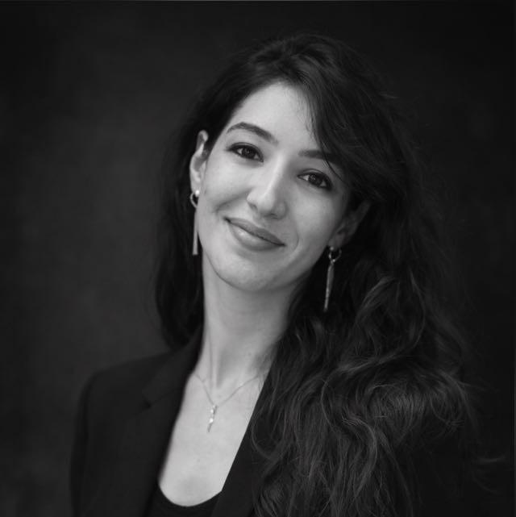

İstanbul / Erenköy
Aile, Gayrimenkul, Miras Hukuku ve Arabuluculuk
Akademik birikimi, dava pratiğini ve arabuluculuk deneyimini birlikte yürüten Av. Ayşenur Kamal; müvekkilleri için açık iletişim, güçlü hazırlık ve ölçülü strateji esasına dayalı hukuki hizmet sunar.

Hakkımda
Akademik Birikim ve Uygulama Deneyimi
1994 yılında Ankara’da doğan Ayşenur Kamal, ilkokuldan liseye kadar İstanbul’da butik bir kolejde eğitimini tamamladıktan sonra Marmara Üniversitesi Hukuk Fakültesi’nden 2016 yılında mezun olmuştur. Avukatlık stajını İstanbul Barosu bünyesinde tamamlamış, ardından özel hukuk alanında faaliyet gösteren çeşitli hukuk bürolarında çalışmıştır. 2020 yılından bu yana serbest avukatlık yapmaktadır.
Uygulamadaki çalışma deneyiminin ardından akademik faaliyetlere yönelmiş; 2020 yılında İstanbul Üniversitesi Özel Hukuk yüksek lisans programına başlamış ve banka sözleşmeleri, inşaat hukuku, kentsel dönüşüm hukuku, medeni hukuk ve borçlar hukuku alanlarında ağırlıklı dersler almıştır.
Prof. Dr. Emrehan İnal danışmanlığında hazırladığı “Yapı Alacaklısının Kanuni İpotek Hakkı” isimli yüksek lisans tezi 2024 yılında oybirliği ile kabul edilmiş, takip eden yıl Seçkin Kitabevi tarafından yayımlanmıştır.
2023 yılında Arabuluculuk Daire Başkanlığı’na bağlı arabulucu olarak görev yapmaya başlamış; 500’den fazla tarafla görüşme sağlamış ve 200’den fazla dosyayı dava şartı arabuluculuk kapsamında tamamlamıştır.
2025 yılında Marmara Üniversitesi Özel Hukuk Doktora programına başlamış; özellikle medeni hukuk, aile hukuku ve gayrimenkul hukuku alanlarında doktora araştırmacısı olarak akademik hayatına devam ederken Erenköy’deki ofisinde müvekkillerinin dava ve danışmanlık süreçlerini yürütmektedir.
Uzmanlık Alanları
Özel hukukun dönüşüm gerektiren alanlarında yoğunlaşan çalışma yapısı
Aile Hukuku
Boşanma, velayet, nafaka, mal rejimi ve ebeveynlik planlarının hukuki zeminde yapılandırılması.
Gayrimenkul ve İnşaat Hukuku
Kat karşılığı inşaat, kentsel dönüşüm, taşınmaz uyuşmazlıkları ve yapı kaynaklı alacak süreçleri.
Miras Hukuku
Miras paylaşımı, saklı pay, tereke yönetimi ve miras kaynaklı aile içi uyuşmazlıkların takibi.
Arabuluculuk
Uyuşmazlıkların kontrollü, iletişimi koruyan ve taraflar için sürdürülebilir bir zeminde ele alınması.
Yaklaşım
Uyuşmazlıkları yalnızca bir dava dosyası olarak değil, yaşam düzeninin parçası olarak ele alıyoruz
Aile, gayrimenkul ve miras hukuku alanı çoğu zaman yalnızca bir ayrılık ya da çekişme zemini olarak görülse de, gerçekte hayatın yeniden kurulduğu kritik geçiş dönemlerinden biridir. Bu nedenle hukuki süreç; yalnızca hak ve yükümlülüklerin teknik takibi değil, aynı zamanda yaşam düzeninin dengeli şekilde yeniden kurulmasıdır.
Çalışma yaklaşımımız; çatışmayı büyütmek yerine yönetilebilir hale getirmeyi, müvekkilin hukuki konumunu netleştirmeyi ve süreci olabildiğince öngörülebilir bir yapıda ilerletmeyi hedefler.
Açık iletişim
Sürecin her aşamasında net, anlaşılır ve düzenli bilgilendirme.
Güçlü hazırlık
Dosya yapısına uygun belge, strateji ve hukuki çerçevenin titizlikle kurulması.
Ölçülü strateji
Gereksiz çatışmayı büyütmeden, sonuç odaklı ve sürdürülebilir bir yaklaşım.
Çalışma Süreci
İlk temas sonrası izlenen temel çerçeve
Ön değerlendirme
Uyuşmazlığın kapsamı, mevcut belgeler ve hukuki çerçeve ilk aşamada değerlendirilir.
Strateji belirleme
Dava, danışmanlık veya arabuluculuk ekseninde en uygun yol haritası oluşturulur.
Takip ve iletişim
Süreç boyunca düzenli bilgilendirme yapılarak dosya kontrollü şekilde ilerletilir.
Sık Sorulanlar
İlk temas öncesinde en çok merak edilen başlıklar
Hangi alanlarda hizmet verilmektedir?
Aile hukuku, gayrimenkul ve inşaat hukuku, miras hukuku ile arabuluculuk alanlarında danışmanlık ve dava takibi yürütülmektedir.
İlk görüşmede neler değerlendirilir?
Uyuşmazlığın temel çerçevesi, mevcut belgeler, olası hukuki yollar ve sürecin genel yapısı değerlendirilir.
Arabuluculuk hangi durumlarda uygundur?
Taraflar arasında uzlaşma zemini kurulabilecek ve kontrollü iletişimin korunabildiği pek çok uyuşmazlıkta arabuluculuk etkili bir yöntem olabilir.
İletişim
Hukuki danışmanlık ve dava süreçleri için iletişime geçin
Ofis konumu, çalışma alanları ve ilk görüşme süreci hakkında bilgi almak için aşağıdaki kanallar üzerinden iletişim kurulabilir.
Konum
Erenköy / İstanbul
Telefon
+90 500 000 00 00
E-posta
info@example.com
WhatsApp
Mesaj Gönder
LinkedIn
Profili Görüntüle
Instagram
Hesabı Görüntüle